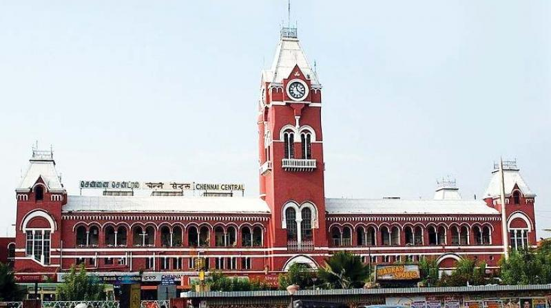

Exploring Chennai
Vibrant, vivacious and vivid - Chennai's amazing amalgamation of the classical Tamil aestheticism with a new layer of cosmopolitan culture is definitely a treat for every traveller who decides to explore this coastal metropolitan city. Spanning a wide range of diverse attractions, the ample places to visit in Chennai will enthrall travellers to the core. Founded by the British in 1639, Chennai went on to emerge as a topmost tourist attraction apart from being the hub of Tamil politics, economy and culture. Beautiful beaches, a motley assortment of architectural wonders in the form of temples and numerous eateries offering delectable local and international fare - there are many points of interest in Chennai that will fill you up with charming experiences.
Travel Tips for Chennai
- Best Time to Visit: Winter(Nov-Feb)
-
Places to Visit:
- Marina Beach The Marina Beach happens to one of the main attractions of this coastal city. Sprawling over a distance of more than 13 kilometres, the coastline is the longest in Asia and the second longest in the world after the Miami Beach, Florida. It runs from Fort St. George in the north to Besant Nagar in the south.
- St. George Fort and Museum: One of the prominent places of interest in Chennai, the St. George Fort and Museum was built by the British in 1653. Since its inception, the structure has undergone several facelifts and today happens to be centre of Tamil Nadu's legislative assembly.
- San Thome Cathedral and Basillica The white neo-gothic cathedral leaves behind an indelible impression on the visitors with its 180 feet tall spire. Considered one of the holiest shrines of Christianity, the Basilica has the remains of St Thomas, (one of Jesus' 12 apostles) who came here to preach.
- Government Museum History lovers and culture vultures can have an awesome time exploring the Government Museum of the city. The museum is a treasure trove of artefacts from the 6th century onwards and houses artefacts from all major south Indian kingdoms like the Cholas, the Chalukyas, the Hoysalas and the Pallavas.
- Guindy National Park and Snake Park One of the smallest national parks of India, the Guindy National Park and its adjacent Snake Park are also prominent tourist attractions in the city. It is also one of the very few national parks located within a main city.